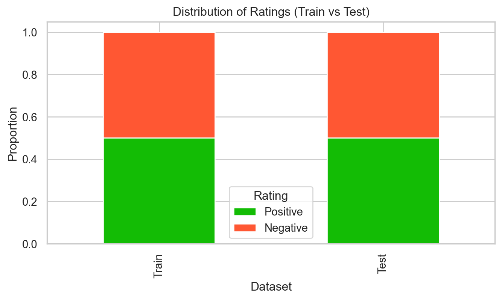

This is a tutorial to perform binary classifications for the Amazon Reviews dataset.
The Amazon reviews dataset consists of reviews from amazon. The data span a period of 18 years, including ~35 million reviews up to March 2013. Reviews include product and user information, ratings, and a plaintext review. Here, we take review score 1 and 2 as negative, and 4 and 5 as positive. Samples of score 3 are ignored.
Loading Packages & Dataset
Code
# osimport osfrom dotenv import load_dotenv# dataimport numpy as npimport pandas as pd# nlpfrom sentence_transformers import SentenceTransformerimport nltk# classificationfrom sklearn import preprocessingfrom sklearn.linear_model import LogisticRegressionfrom sklearn.ensemble import AdaBoostClassifier, RandomForestClassifierfrom imblearn.over_sampling import SMOTE# plottingimport matplotlib.pyplot as pltimport matplotlib.colors as mcolorsimport seaborn as sns
# Length of the dataprint(len(train_df))print(len(test_df))# Filter out NaNstrain_df.dropna(inplace=True)test_df.dropna(inplace=True)# Name the columnstrain_df.columns = ["rating", "title", "review"]test_df.columns = ["rating", "title", "review"]# Change the rating values to "positive" and "negative"train_df["rating"] = train_df["rating"].map({1: "negative", 2: "positive"})test_df["rating"] = test_df["rating"].map({1: "negative", 2: "positive"})
3600000
400000
The dataset is too huge. To save computational resources, we are going to sample 1% of the data to analyze. All the methods should still work on the full dataset though.
Code
# Sample 1% of the data for each rating categoryrandom_state =42train_df = ( train_df.groupby("rating") .apply(lambda x: x.sample(frac=0.01, random_state=random_state)) .reset_index(drop=True))test_df = ( test_df.groupby("rating") .apply(lambda x: x.sample(frac=0.01, random_state=random_state)) .reset_index(drop=True))# Reshuffle the sampled datatrain_df = train_df.sample(frac=1, random_state=random_state).reset_index(drop=True)test_df = test_df.sample(frac=1, random_state=random_state).reset_index(drop=True)
Just want to double check that the dataset is still balanced after sampling.
Code
# Calculate the distribution of ratingstrain_rating_counts = train_df["rating"].value_counts(normalize=True)test_rating_counts = test_df["rating"].value_counts(normalize=True)# Create a DataFrame for plottingrating_distribution = pd.DataFrame( {"Train": train_rating_counts, "Test": test_rating_counts}).T# Plot the stacked bar plotsns.set_theme(style="whitegrid")rating_distribution.plot(kind="bar", stacked=True, color=["#13bc05", "#ff5733"])plt.title("Distribution of Ratings (Train vs Test)")plt.xlabel("Dataset")plt.ylabel("Proportion")plt.legend(title="Rating", labels=["Positive", "Negative"])plt.show()

Here are some example reviews from the sampled data:
Code
print(train_df.head())# Example of a negative reviewprint(train_df.loc[train_df.rating =="negative", "review"].iloc[0][:500])# Example of a positive reviewprint(train_df.loc[train_df.rating =="positive", "review"].iloc[0][:500])
rating title \
0 positive Give it as a gift
1 negative Prevention pillbox disappointment
2 negative Disappointing
3 positive Why... did they discontinue this?
4 negative booo john woo. zero stars for you
review
0 For fourteen years I've given this book as a g...
1 I just bought this pillbox/timer so I would no...
2 I enjoy novels set in 19th century England and...
3 I find this fragrance irresistable. My husband...
4 What's worse than making a really bad movie is...
I just bought this pillbox/timer so I would not forget to take my pills anymore, unfortunately the alarm did not work. It kept good time, but the alarm never went off. It has a warranty, however you have to send a check for $3.95 to cover shipping & handling, and to send it back I would have to pay another $5.00 so I rather take this one as a loss, and spend that money to buy another brand. Very disappointed.
For fourteen years I've given this book as a gift when friends lose loved ones. This is not an intense read, and very comforting. There is something for everyone.
Makes sense! Let’s get to the modeling.
Embedding Extraction
Let’s first extract features, in this case embeddings, which are internal activations of Large Language Models (LLMs). LLMs relies on the Transformer architecture to sculpt the embedding of a given word based on the surrounding context. The model is composed of a repeated circuit motif—called the “attention head” — by which the model can “attend” to surrounding words in the context window when determining the meaning of the current word.
Here we use a model named paraphrase-MiniLM-L3-v2. This is a really small model (relative to the other current LLMs) with about 61 million parameters. It is composed of 3 layers, each of which contains each of which contains 12 attention heads that influence the embedding as it proceeds to the subsequent layer. The embeddings at each layer of the model comprise 384 features and the context window includes the surrounding 512 tokens.
Note that usually we get word embeddings from the LLMs. To simply things, here we directly gets a 768 dimension vector for the whole sentence or paragraph, using the sentence transformer library.
To access this model, we have to register an account on Huggingface and get an access token. If you are curious, this page has more information about it. Here, we store the access token in a .env file under the variable HUG_KEY and load it through the dotenv package.
Now that we have loaded the model, we are going to generate three types of embeddings. First, we use the titles of the reviews to generate embeddings, which we call title_emb. Second, we use the full reviews to generate embeddings, which we call review_emb. Note that if a review is longer than 514 words, then model will only use the first 514 words. One way to improve this is to seperate the full reviews into sentences, generate embeddings for each sentence, and then average the sentence embeddings. This we call sent_emb.
We first look at what sent_tokenize from the nltk package does:
Code
# Example of a negative reviewprint(train_df.loc[0, "review"][:500])# Sentence tokenizernltk.sent_tokenize(train_df.loc[0, "review"])
For fourteen years I've given this book as a gift when friends lose loved ones. This is not an intense read, and very comforting. There is something for everyone.
["For fourteen years I've given this book as a gift when friends lose loved ones.",
'This is not an intense read, and very comforting.',
'There is something for everyone.']
Now we will define the functions for embedding extractions and extract the three types of embeddings.
Code
def full_text_emb(model, text): emb = model.encode(text, show_progress_bar=True) # encode the full textreturn embdef sent_text_emb(model, text): sent_text = nltk.sent_tokenize(text) # tokenize the text into sentences emb = model.encode(sent_text, show_progress_bar=True) # batch encode emb = np.mean(emb, axis=0).shape # mean of the sentence embeddingsreturn emb# Extract embeddingstrain_df["title_emb"] = train_df["title"].apply(lambda x: full_text_emb(model, x))train_df["review_emb"] = train_df["review"].apply(lambda x: full_text_emb(model, x))train_df["sent_emb"] = train_df["review"].apply(lambda x: sent_text_emb(model, x))test_df["title_emb"] = test_df["title"].apply(lambda x: full_text_emb(model, x))test_df["review_emb"] = test_df["review"].apply(lambda x: full_text_emb(model, x))test_df["sent_emb"] = test_df["review"].apply(lambda x: sent_text_emb(model, x))
Because we have so much data, generating embeddings still takes a lot of computational resources even after the 1% sampling. Thus, we are just going to load the already generated title_emb and review_emb and ignore sent_emb for now. If you are interested, here is the script we used to batch the input and speed up the embedding extraction process.
Code
# Load the sampled csvtrain_df = pd.read_csv("train_s.csv")test_df = pd.read_csv("test_s.csv")# Load the generated embeddingstrain_review_emb = np.load("train_review_embs.npy")train_title_emb = np.load("train_title_embs.npy")test_review_emb = np.load("test_review_embs.npy")test_title_emb = np.load("test_title_embs.npy")# Specify the y column as arraytrain_y = np.array(train_df.rating)test_y = np.array(test_df.rating)print(train_review_emb.shape, train_title_emb.shape, train_y.shape)print(test_review_emb.shape, test_title_emb.shape, test_y.shape)
Now we have both the embeddings and the corresponding review results (positive and negative), we can start to perform classification. We will use a few classifiers, including Logistic Regression and Ridge Regression Classifier. We will also employ some ensemble methods, like Adaboost and Random Forest. We will first define each of them in separate functions.
First we will define a scale function that scales all input data.
Code
def Scale(data):# Scales data scaler = preprocessing.StandardScaler().fit(data) # scaler data = scaler.transform(data) # scale training datareturn data
Here are the classifiers, including logistic regression without penalty, logistic regression with elastic-net penalty, and ridge classifier. We customize the number of iteraions through the max_iter parameter. If you are curious about each methods and the function that is implemented in Python, here are more info on sklearn about logistic regression and ridge classifier.
Code
def LogReg(train_x, train_y, test_x, test_y, iter):# logistic train_x = Scale(train_x) # scale training data test_x = Scale(test_x) # scale training data logreg = LogisticRegression(penalty=None, solver="saga", max_iter=iter).fit( train_x, train_y )return logreg.score(test_x, test_y) # return accuracydef ElasticNet(train_x, train_y, test_x, test_y, iter):# logistic elastic net train_x = Scale(train_x) # scale training data test_x = Scale(test_x) # scale training data logreg = LogisticRegression( penalty="elasticnet", l1_ratio=0.5, solver="saga", max_iter=iter ).fit(train_x, train_y)return logreg.score(test_x, test_y) # return accuracydef Ridge(train_x, train_y, test_x, test_y, iter):# ridge ridge = RidgeClassifier(max_iter=iter).fit(train_x, train_y) # ridgereturn ridge.score(test_x, test_y) # return accuracy
Here are the ensemble methods, including Adaboost and Random Forest. Here, we customize the number of parameters for Adaboost and the number of trees for Random Forest through the n_estimators parameter.
Some of the classification methods, especially Adaboost, takes a long time to run. So we are not going to actually run them here. Here are the some sample code to run logistic regression for review_emb and title_emb. The actual script we used is here.
For all our methods, the classification accuracy is about 0.8. It seems that there isn’t much difference between our two types of embeddings and the classification methods.
The ensemble methods, Adaboost and Random Forest, perform a bit worse. They are in general more complicated and potentially require more finetuning with the parameters, which we did not do in this tutorial.
Using the titles for embeddings is on par with using the full review, which is pretty surprising but makes sense. There probably is enough info in the review title most of the times to determine if the review is positive or negative.
Again, this is just a simple tutorial demonstrating some classification methods. In order to perform a comprehensive classification study, here are some more steps to include: - Using better models for embedding. The current model is super small in terms of LLMs and previous research have shown that bigger and better trained models will have better performance.
Implementing the third type of embedding sent_emb, which will incorporate the full review into the embedding.
Perform some parameter search with our models, especially with the ensemble methods.
Use the full data. Here we are only sampling 1% of the data.
Source Code
---title: "Final Project"subtitle: "Princeton University"date: "2025-05-03"author: "KW"categories: [code, analysis]format: html: self-contained: false anchor-sections: true code-tools: true code-fold: true fig-width: 8 fig-height: 4 code-block-bg: "#f1f3f5" code-block-border-left: "#31BAE9" mainfont: Source Sans Pro theme: journal toc: true toc-depth: 3 toc-location: left captions: true cap-location: margin table-captions: true tbl-cap-location: margin reference-location: margin pdf: pdf-engine: lualatex toc: false number-sections: true number-depth: 2 top-level-division: section reference-location: document listings: false header-includes: \usepackage{marginnote, here, relsize, needspace, setspace} \def\it{\emph}execute: freeze: auto echo: true message: false warning: false fig-align: center fig-width: 12 fig-height: 8 editor_options: chunk_output_type: inline code-overflow: wrap html: code-fold: true code-tools: trueeditor: visual---------------------------------------------------------------------------This is a tutorial to perform binary classifications for the [Amazon Reviews](https://www.kaggle.com/datasets/kritanjalijain/amazon-reviews/data) dataset.The Amazon reviews dataset consists of reviews from amazon. The data span a period of 18 years, including ~35 million reviews up to March 2013. Reviews include product and user information, ratings, and a plaintext review. Here, we take review score 1 and 2 as negative, and 4 and 5 as positive. Samples of score 3 are ignored.## Loading Packages & Dataset```{python, warning=FALSE}# osimport osfrom dotenv import load_dotenv# dataimport numpy as npimport pandas as pd# nlpfrom sentence_transformers import SentenceTransformerimport nltk# classificationfrom sklearn import preprocessingfrom sklearn.linear_model import LogisticRegressionfrom sklearn.ensemble import AdaBoostClassifier, RandomForestClassifierfrom imblearn.over_sampling import SMOTE# plottingimport matplotlib.pyplot as pltimport matplotlib.colors as mcolorsimport seaborn as sns``````{python}# Load datatrain_df = pd.read_csv("train.csv", header=None)test_df = pd.read_csv("test.csv", header=None)```## EDA```{python}# Length of the dataprint(len(train_df))print(len(test_df))# Filter out NaNstrain_df.dropna(inplace=True)test_df.dropna(inplace=True)# Name the columnstrain_df.columns = ["rating", "title", "review"]test_df.columns = ["rating", "title", "review"]# Change the rating values to "positive" and "negative"train_df["rating"] = train_df["rating"].map({1: "negative", 2: "positive"})test_df["rating"] = test_df["rating"].map({1: "negative", 2: "positive"})```The dataset is too huge. To save computational resources, we are going to sample 1% of the data to analyze. All the methods should still work on the full dataset though.```{python}# | warning: false# Sample 1% of the data for each rating categoryrandom_state =42train_df = ( train_df.groupby("rating") .apply(lambda x: x.sample(frac=0.01, random_state=random_state)) .reset_index(drop=True))test_df = ( test_df.groupby("rating") .apply(lambda x: x.sample(frac=0.01, random_state=random_state)) .reset_index(drop=True))# Reshuffle the sampled datatrain_df = train_df.sample(frac=1, random_state=random_state).reset_index(drop=True)test_df = test_df.sample(frac=1, random_state=random_state).reset_index(drop=True)```Just want to double check that the dataset is still balanced after sampling.```{python}# Calculate the distribution of ratingstrain_rating_counts = train_df["rating"].value_counts(normalize=True)test_rating_counts = test_df["rating"].value_counts(normalize=True)# Create a DataFrame for plottingrating_distribution = pd.DataFrame( {"Train": train_rating_counts, "Test": test_rating_counts}).T# Plot the stacked bar plotsns.set_theme(style="whitegrid")rating_distribution.plot(kind="bar", stacked=True, color=["#13bc05", "#ff5733"])plt.title("Distribution of Ratings (Train vs Test)")plt.xlabel("Dataset")plt.ylabel("Proportion")plt.legend(title="Rating", labels=["Positive", "Negative"])plt.show()```Here are some example reviews from the sampled data:```{python}print(train_df.head())# Example of a negative reviewprint(train_df.loc[train_df.rating =="negative", "review"].iloc[200][:500])# Example of a positive reviewprint(train_df.loc[train_df.rating =="positive", "review"].iloc[200][:500])```Makes sense! Let's get to the modeling.## Embedding ExtractionLet's first extract features, in this case embeddings, which are internal activations of Large Language Models (LLMs). LLMs relies on the Transformer architecture to sculpt the embedding of a given word based on the surrounding context. The model is composed of a repeated circuit motif—called the "attention head" — by which the model can "attend" to surrounding words in the context window when determining the meaning of the current word. Here we use a model named [paraphrase-MiniLM-L3-v2](https://huggingface.co/sentence-transformers/paraphrase-MiniLM-L3-v2). This is a really small model (relative to the other current LLMs) with about 61 million parameters. It is composed of 3 layers, each of which contains each of which contains 12 attention heads that influence the embedding as it proceeds to the subsequent layer. The embeddings at each layer of the model comprise 384 features and the context window includes the surrounding 512 tokens. Note that usually we get word embeddings from the LLMs. To simply things, here we directly gets a 768 dimension vector for the whole sentence or paragraph, using the [sentence transformer](https://sbert.net/index.html) library.To access this model, we have to register an account on Huggingface and get an access token. If you are curious, [this page](https://huggingface.co/docs/hub/en/security-tokens) has more information about it. Here, we store the access token in a `.env` file under the variable `HUG_KEY` and load it through the `dotenv` package.```{python, eval=FALSE}#| eval: falseload_dotenv()model = SentenceTransformer("paraphrase-MiniLM-L3-v2", use_auth_token=os.environ["HUG_KEY"])```Now that we have loaded the model, we are going to generate three types of embeddings. First, we use the titles of the reviews to generate embeddings, which we call `title_emb`. Second, we use the full reviews to generate embeddings, which we call `review_emb`. Note that if a review is longer than 514 words, then model will only use the first 514 words. One way to improve this is to seperate the full reviews into sentences, generate embeddings for each sentence, and then average the sentence embeddings. This we call `sent_emb`.We first look at what `sent_tokenize` from the `nltk` package does:```{python}# Example of a negative reviewprint(train_df.loc[0, "review"][:500])# Sentence tokenizernltk.sent_tokenize(train_df.loc[0, "review"])```Now we will define the functions for embedding extractions and extract the three types of embeddings.```{python}# | eval: falsedef full_text_emb(model, text): emb = model.encode(text, show_progress_bar=True) # encode the full textreturn embdef sent_text_emb(model, text): sent_text = nltk.sent_tokenize(text) # tokenize the text into sentences emb = model.encode(sent_text, show_progress_bar=True) # batch encode emb = np.mean(emb, axis=0).shape # mean of the sentence embeddingsreturn emb# Extract embeddingstrain_df["title_emb"] = train_df["title"].apply(lambda x: full_text_emb(model, x))train_df["review_emb"] = train_df["review"].apply(lambda x: full_text_emb(model, x))train_df["sent_emb"] = train_df["review"].apply(lambda x: sent_text_emb(model, x))test_df["title_emb"] = test_df["title"].apply(lambda x: full_text_emb(model, x))test_df["review_emb"] = test_df["review"].apply(lambda x: full_text_emb(model, x))test_df["sent_emb"] = test_df["review"].apply(lambda x: sent_text_emb(model, x))```Because we have so much data, generating embeddings still takes a lot of computational resources even after the 1% sampling. Thus, we are just going to load the already generated `title_emb` and `review_emb` and ignore `sent_emb` for now. If you are interested, here is the [script](https://github.com/VeritasJoker/PSY-504-Quarto/blob/main/posts/05-01%20Final%20Project/emb_extract.py) we used to batch the input and speed up the embedding extraction process.```{python}# Load the sampled csvtrain_df = pd.read_csv("train_s.csv")test_df = pd.read_csv("test_s.csv")# Load the generated embeddingstrain_review_emb = np.load("train_review_embs.npy")train_title_emb = np.load("train_title_embs.npy")test_review_emb = np.load("test_review_embs.npy")test_title_emb = np.load("test_title_embs.npy")# Specify the y column as arraytrain_y = np.array(train_df.rating)test_y = np.array(test_df.rating)print(train_review_emb.shape, train_title_emb.shape, train_y.shape)print(test_review_emb.shape, test_title_emb.shape, test_y.shape)```## ClassificationNow we have both the embeddings and the corresponding review results (positive and negative), we can start to perform classification. We will use a few classifiers, including Logistic Regression and Ridge Regression Classifier. We will also employ some ensemble methods, like Adaboost and Random Forest. We will first define each of them in separate functions.First we will define a scale function that scales all input data.```{python}def Scale(data):# Scales data scaler = preprocessing.StandardScaler().fit(data) # scaler data = scaler.transform(data) # scale training datareturn data```Here are the classifiers, including logistic regression without penalty, logistic regression with elastic-net penalty, and ridge classifier. We customize the number of iteraions through the `max_iter` parameter. If you are curious about each methods and the function that is implemented in Python, here are more info on sklearn about [logistic regression](https://scikit-learn.org/stable/modules/generated/sklearn.linear_model.LogisticRegression.html) and [ridge classifier](https://scikit-learn.org/stable/modules/generated/sklearn.linear_model.RidgeClassifier.html).```{python}def LogReg(train_x, train_y, test_x, test_y, iter):# logistic train_x = Scale(train_x) # scale training data test_x = Scale(test_x) # scale training data logreg = LogisticRegression(penalty=None, solver="saga", max_iter=iter).fit( train_x, train_y )return logreg.score(test_x, test_y) # return accuracydef ElasticNet(train_x, train_y, test_x, test_y, iter):# logistic elastic net train_x = Scale(train_x) # scale training data test_x = Scale(test_x) # scale training data logreg = LogisticRegression( penalty="elasticnet", l1_ratio=0.5, solver="saga", max_iter=iter ).fit(train_x, train_y)return logreg.score(test_x, test_y) # return accuracydef Ridge(train_x, train_y, test_x, test_y, iter):# ridge ridge = RidgeClassifier(max_iter=iter).fit(train_x, train_y) # ridgereturn ridge.score(test_x, test_y) # return accuracy```Here are the ensemble methods, including [Adaboost](https://scikit-learn.org/stable/modules/generated/sklearn.ensemble.AdaBoostClassifier.html) and [Random Forest](https://scikit-learn.org/stable/modules/generated/sklearn.ensemble.RandomForestClassifier.html). Here, we customize the number of parameters for Adaboost and the number of trees for Random Forest through the `n_estimators` parameter.```{python}def AdaBoost(train_x, train_y, test_x, test_y, n_est):# adaboost ada = AdaBoostClassifier(n_estimators=n_est).fit(train_x, train_y) # adaboostreturn ada.score(test_x, test_y) # return accuracydef RandForest(train_x, train_y, test_x, test_y, n_est):# random forest forest = RandomForestClassifier(n_estimators=n_est).fit( train_x, train_y ) # build forestreturn forest.score(test_x, test_y) # return accuracy```Some of the classification methods, especially Adaboost, takes a long time to run. So we are not going to actually run them here. Here are the some sample code to run logistic regression for `review_emb` and `title_emb`. The actual script we used is [here](https://github.com/VeritasJoker/PSY-504-Quarto/blob/main/posts/05-01%20Final%20Project/classifier.py).```{python}# | eval: falsereview_log_score = LogReg(train_review_emb, train_y, test_reiew_emb, test_y, 500)title_log_score = LogReg(train_title_emb, train_y, test_title_emb, test_y, 500)```Instead, we will directly load a summary csv of all the classification results and checkout how it looks.```{python}classification_results = pd.read_csv("scores.csv")classification_results```We can also plot the scores on a bar plot.```{python}sns.set_theme(style="whitegrid")sns.catplot( data=classification_results, kind="bar", x="Embedding Type", y="Classification Score", hue="Classification Model", errorbar="sd", palette="dark", alpha=0.6, height=6,)```## ResultsFor all our methods, the classification accuracy is about 0.8. It seems that there isn't much difference between our two types of embeddings and the classification methods.The ensemble methods, Adaboost and Random Forest, perform a bit worse. They are in general more complicated and potentially require more finetuning with the parameters, which we did not do in this tutorial.Using the titles for embeddings is on par with using the full review, which is pretty surprising but makes sense. There probably is enough info in the review title most of the times to determine if the review is positive or negative.Again, this is just a simple tutorial demonstrating some classification methods. In order to perform a comprehensive classification study, here are some more steps to include:- Using better models for embedding. The current model is super small in terms of LLMs and previous research have shown that bigger and better trained models will have better performance.- Implementing the third type of embedding `sent_emb`, which will incorporate the full review into the embedding.- Perform some parameter search with our models, especially with the ensemble methods.- Use the full data. Here we are only sampling 1% of the data.